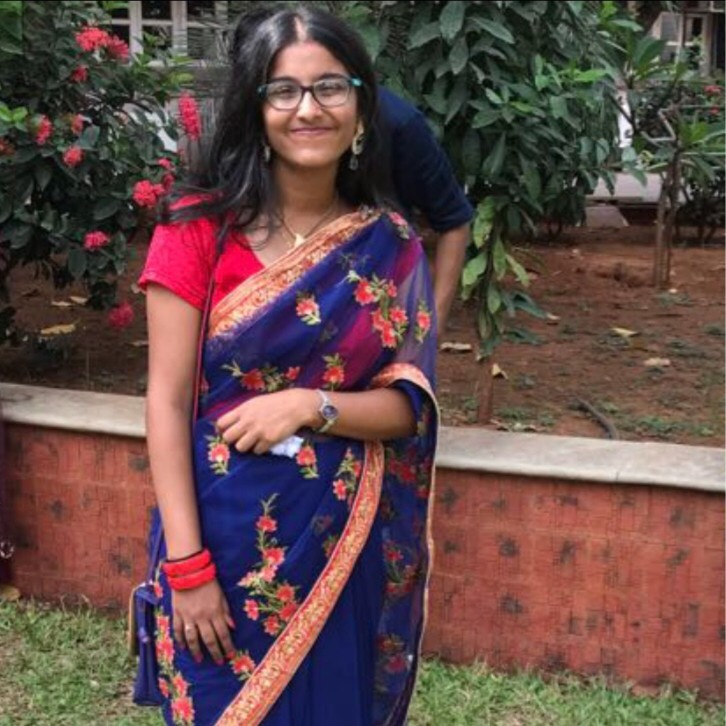

Drishti Samvedi

Summary
Initiative-driven, detail-oriented, persistent problem-solver looking
to improve interpersonal skills. Particularly keen to take on
challenges and learn new things. My goal is to work in the software
field and apply my knowledge and experience to the best interests
of the company.
Education
-
B.E, Computer Engineering [CGPA: 9.85]
Vivekanand Education Society's Institute of Technology, Chembur, Mumbai [2020-2024]
Work Experience
-
Web Development Intern - PNT Robotics and Solution
January 2023 - May 2023
- Built a website from scratch for their academic venture - PNT Academy
- Hosted the website
-
Web Development Intern - VESIT CPulser Pvt. Ltd.
December 2022 - January 2023
- Worked on the Finance Module for the company
- Researched about the features to be included and implemented CRUD on Salary Module.
Projects
-
Remote Access Control to Sensitive Areas using Crypto Card
-
In collaboration with Tata Institute of Fundamental Research
-
3 factor authentication system - Face Recognition, Voice Recognition, NFC Smart Card Verification
-
Mental Wellness - Mind Matters
-
Web application where people can take screening test and schedule appointments with psychiatrist/psychologist.
-
Online Crime Reporting and Management System
-
System where citizens can file online FIRs and Missing Person Report
-
Separate roles for Users, Police Officials and Admin
Skills
- Leadership
- Inquisitive
- Adaptive Collaborator
- Effective in verbal and written
- communication skills
- Strong Planning and Organizational
- Skills
Achievements
-
Published a patent, April 2024
-
Title of the patent - A system and a Method for Remote Access Control to Sensitive Areas using Crypto Card
-
Winners of Chhalaang Hackathon 2.0, April 2024
-
Developed a fully functional stocks screener for Groww
-
Ranked in top 10 among 30 teams in Chhalaang Hackathon, December 2022
-
Made comparison engine to compare motor insurance policies from various companies
-
4th prize in Syrus Hackathon with over 50 teams, March 2023
-
Created a Job Portal for Migrant workers
-
2nd prize out of 250 teams in National Level Project Competition organized by Atharva College of Engineering, April 2023
-
Published and presented Research Paper in 7th ICTIS Conference in Springer Nature conducted in April 2023
Other